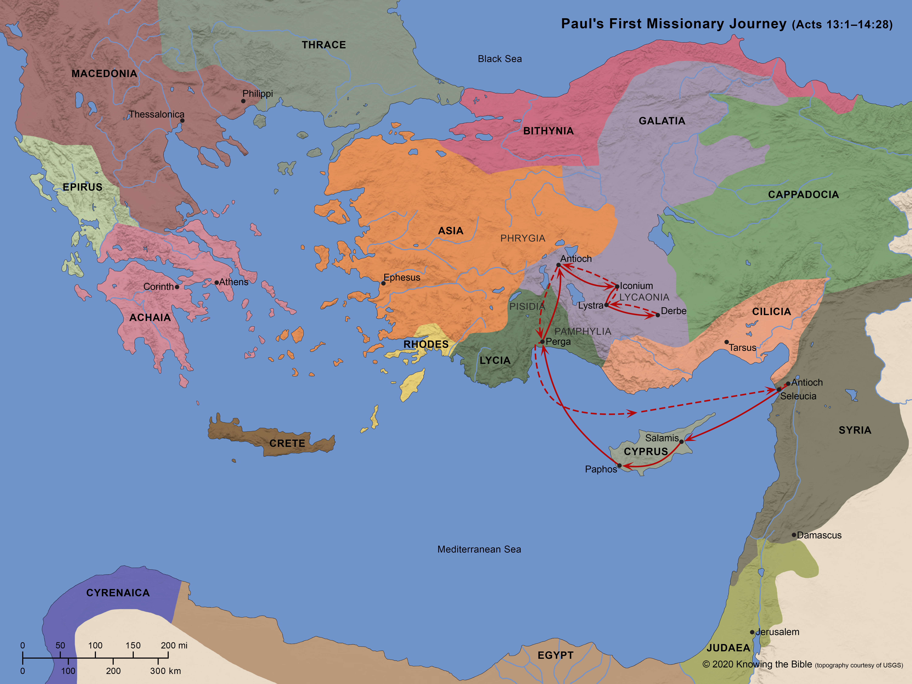

Notas de Estudio sobre Gálatas
Introducción
Galacia y los gálatas
Los autores griegos y latinos usan los términos Celtæ, Galatæ y Galli sin una clara distinción. [Burton]
En 390 a.C., los galos invadieron Italia y capturaron Roma. Polibio llamó a estos galos Γαλάται y Κελτοί, y a su país Γαλατία. [Burton]
Después de invadir primero toda la península, los galos fueron derrotados alrededor del 239 a.C. por Atalo I, rey de Pérgamo. Como resultado de esta derrota, quedaron confinados a un territorio algo al norte y al este del centro, limitado al norte por Bitinia y Paflagonia, al este por el Ponto, al sur por Capadocia y Licaonia, y al oeste por Frigia. [Burton]
En 189 a.C., esta Galia oriental, llamada por los griegos Galacia o Gallo-Græcia, compartió el destino del resto de Asia Menor y quedó bajo el poder de los romanos. [Burton]
En el primer siglo a.C., la región de Galacia fue ampliada. [Burton]
Esto resulta en un doble uso del término Galacia. Puede referirse al territorio romano en Asia Menor o, en el sentido etnográfico más antiguo, a la región más limitada. [Burton]
¿Dónde estaban las iglesias de Galacia?

La historia de la opinión
Los intérpretes antiguos daban por sentado, sin discusión, que las iglesias estaban en la parte norte, gala, de la provincia. La opinión de Galacia del sur fue propuesta por primera vez por J. J. Schmidt en 1788. [Burton]